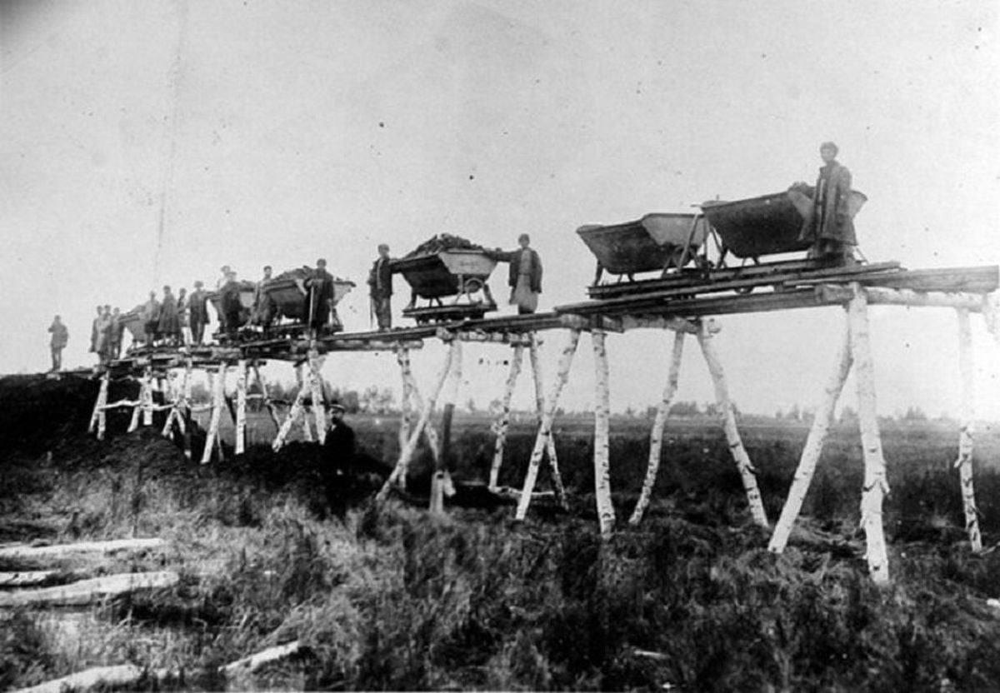
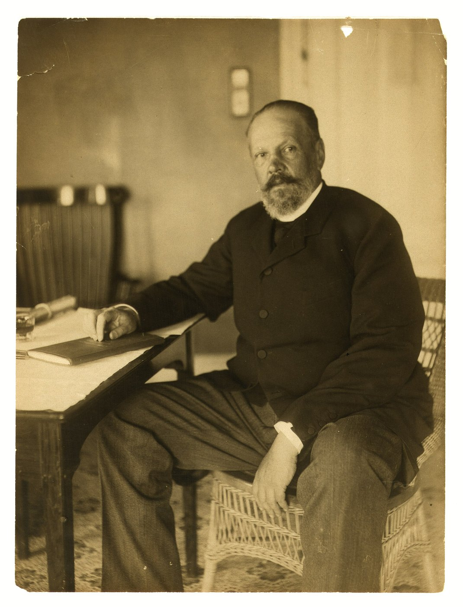
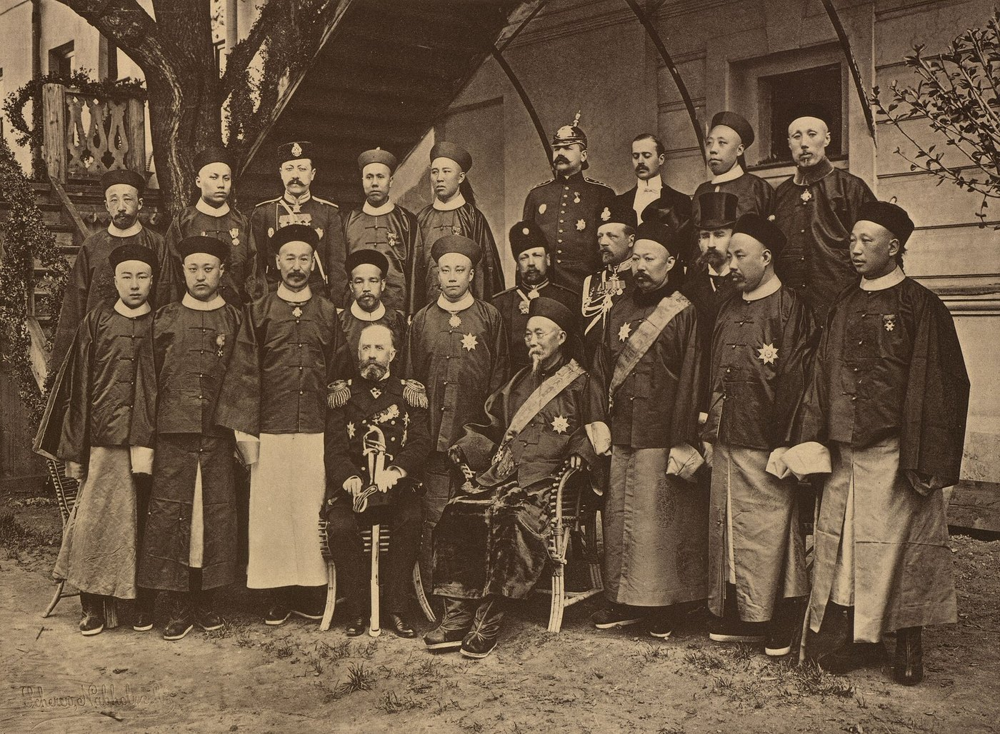
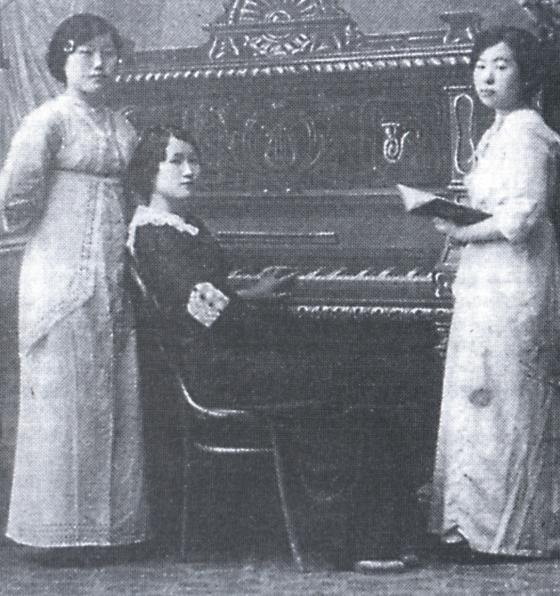
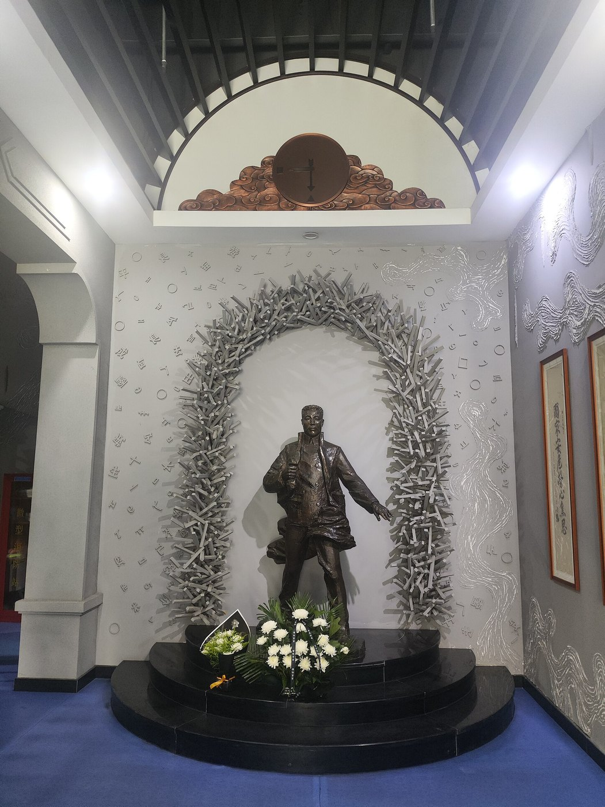
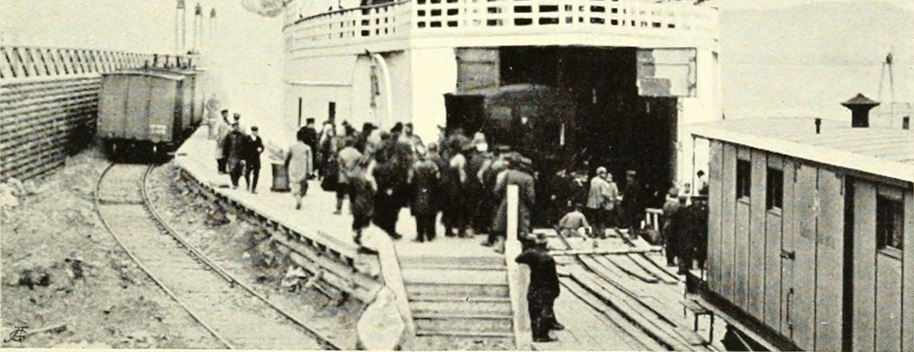

[동북아이야기④] 철도가 만든 제국, 시베리아의 꿈과 혁명가들
칼 맞은 황태자가 뜬 시베리아철도 첫 삽
철도 위에서 갈린 이홍장·민영환·최재형의 길
바이칼호에서 끊긴 철도와 만철의 탄생
AI경제저널=김갑봉 기자 | 19세기 말 동북아시아의 운명을 바꾼 도구 가운데 하나는 철도였다. 철도는 교통수단에 그치지 않았다. 제국의 야망을 실어 나르는 혈관이었고, 식민지 수탈의 동맥이었으며, 때로는 혁명가들의 통로였다.
1891년 첫 삽을 떠 1916년 러시아 땅 안에서 끝까지 이어진 시베리아횡단철도, 그리고 그 지름길로 만주를 가로지른 동청철도를 놓고 러시아와 청, 일본과 조선의 운명이 얽혔다. 그 철도를 타고 독립운동가가 국경을 넘었다. 그 철도를 둘러싸고 전쟁이 일어났다.
이 연재 3편에서 개항 뒤 30년 동안 조선과 청, 일본 세 나라가 어떻게 갈렸는지를 봤다. 그 갈림의 한복판에 강철 궤도가 있었다. 이번 회는 철도를 놓은 사람과 철도에 올라탄 사람의 이야기다.
칼을 맞은 황태자와 시베리아의 대동맥
1891년 5월 31일 블라디보스토크 근처에서 시베리아횡단철도 기공식이 열렸다. 러시아 황태자 니콜라이가 삽으로 흙을 떠 첫 손수레를 날랐고, 이어 블라디보스토크역의 초석을 놓았다. 뒷날의 니콜라이 2세다. 스물세 살 황태자는 스무 날 전 일본에서 머리에 칼을 맞은 몸이었다.
5월 11일 일본 시가현(滋賀県) 오쓰(大津)에서 벌어진 일이다. 경호를 맡은 시가현 순사 쓰다 산조(津田三蔵)가 갑자기 칼을 빼 황태자의 머리를 내리쳤다. 함께 여행하던 사촌 그리스 왕자 게오르기오스가 지팡이로 쓰다를 쳤고, 인력거꾼들이 쓰다를 붙잡았다. 황태자는 머리에 상처를 입었다. 오쓰 사건이다.
일본 정부는 발칵 뒤집혔다. 러시아와 관계가 틀어질까 두려워한 정부는 황실에 대한 죄를 적용해 사형을 내리라고 대심원(大審院)을 압박했다. 대심원장 고지마 이켄(児島惟謙)은 이를 물리쳤다. 5월 27일 대심원 법정은 쓰다에게 일반 모살미수죄로 무기도형을 선고했다. 일본 사전들은 이 재판을 사법권 독립을 지킨 사건으로 적는다. 다만 고지마가 판사들을 움직인 경위를 두고는 다른 해석을 내놓은 연구(아라이 쓰토무)도 있다.

이 사업을 실제로 밀어붙인 사람은 세르게이 비테(Sergei Witte, 1849~1915)다. 그는 오데사철도에서 철도 행정을 익혔고, 1889년 재무부에 새로 생긴 철도국을 맡았다. 기공식 이듬해인 1892년 2월 교통장관, 8월 재무장관이 됐다. 외가는 러시아 고위 귀족 집안이었다.
비테는 무력보다 철도와 은행을 앞세워 극동에 들어가자고 주장했다. 러시아사 연구자 루코야노프는 비테가 중국을 두고 늘 '평화적이고 경제적인 침투'를 내세웠다고 정리했다. 최덕규도 비테가 철도와 은행으로 경제적 우위를 지키려 했다고 분석했다.
모스크바에서 블라디보스토크까지 오늘날 총연장은 9288km다. 지구 둘레의 4분의 1에 가까운 길이다. 공사는 여섯 구간으로 나눠 차례로 짓는 계획이었다. 공사에는 8만명이 넘는 노동자가 동원됐고, 일손이 모자라 죄수와 유형수까지 대거 끌려왔다.
박원용은 동청철도 건설 과정을 다룬 논문에서 러시아가 극동에서 늘어나는 중국인 이주노동자를 걱정했다고 짚었다. 값싼 일손은 필요했지만, 그들이 눌러앉아 러시아인의 정착을 가로막을까 두려워했다. 블라고베셴스크에서 중국인이 학살된 사건은 그 갈등이 터진 자리였다. 러일전쟁 뒤 아무르철도를 놓을 때는 중국인을 공사에서 빼자는 주장이 강했다.
아무르강을 따라 도는 구간은 난공사 지대였다. 비테는 이 구간을 피할 지름길을 찾았다. 그 답이 청나라 영토인 만주를 곧장 가로지르는 노선이었다. 거리가 500km쯤 줄고 공사비와 시간을 아낄 수 있었다.

1896년 모스크바, 대관식장에 간 두 나라 사절
1896년 5월 26일 니콜라이 2세 대관식이 모스크바에서 열렸다. 이 대관식에 동북아 두 나라 사절이 와 있었다. 청의 전권대신 이홍장(李鴻章, 1823~1901)과 조선의 특명전권공사 민영환이다. 연해주 한인 사회의 최재형도 참석했다고 백과사전은 적지만, 다른 문헌으로는 확인되지 않는다.
민영환 일행은 이 여정을 『해천추범(海天秋帆)』에 남겼다. 붓을 든 사람은 수행원 김득련이었다. 아홉 해 뒤 민영환은 을사늑약에 항거해 목숨을 끊는다(이 연재 3편).
이홍장의 걸음은 무거웠다. 한 해 전 청일전쟁에 지고 시모노세키(下関)에서 배상금 은 2억냥에 서명한 그였다(이 연재 3편). 그가 키운 북양함대는 무너졌다. 러시아는 그런 이홍장을 대관식 축하 사절로 불렀다.
비테가 이홍장과 협상에 나섰다. 러시아가 일본의 침략에서 청을 함께 지켜 준다는 동맹을 맺고, 그 대가로 만주를 가로지르는 철도 부설을 허락받는 거래였다. 6월 3일 이홍장과 로바노프 외무장관, 비테 재무장관이 조약에 서명했다. 리-로바노프 조약, 곧 러청밀약이다.
세부 권리는 같은 해 9월 맺은 동청철도(中東鐵路) 계약에서 나왔다. 계약 제6조는 철도회사에 부속지의 '절대적인 행정권'을 줬다. 러시아는 이 조항을 넓게 해석해 부속지에 경찰을 두고 철도수비대를 주둔시켰다. 만주 북부에 사실상 러시아가 다스리는 띠가 생겼다.

최덕규는 이 시기 러시아 안에서 두 갈래 생각이 맞섰다고 분석했다. 만주를 나눠 북쪽만 차지하자는 분할론과, 뤼순(旅順)·다롄(大連)까지 손에 넣고 만주 전체를 러시아 영토로 삼자는 병합론이다. 비테의 철도는 그 사이에서 만주를 경제로 묶는 길이었다.
이홍장이 뇌물을 받았다는 이야기는 오래 돌았다. 루코야노프가 인용한 러시아 쪽 기록에는 비테가 이홍장 개인에게 300만루블을 나눠 주기로 한 약속이 남아 있다. 다만 루코야노프는 뇌물이 조약의 동인이었다고 단정하지 않는다. 이홍장은 다섯 해 뒤 죽을 때까지 나라를 팔았다는 비난에 시달렸다. 철도 한 줄을 내주고 나라를 지키려던 계산은 여덟 해 뒤 정반대의 결과로 돌아왔다.
동청철도는 만저우리(滿洲里)에서 하얼빈(哈爾濱)을 거쳐 쑤이펀허(綏芬河)로 이어지며 치타와 블라디보스토크를 곧장 이었다. 청은 철도에 쓸 땅을 내줬다. 그러나 철도회사는 러청은행의 자회사였고, 그 관리는 러시아 재무부가 쥐었다.
'페치카' 최재형과 우랄의 통역 김알렉산드라
철도가 놓이던 연해주에는 함경도에서 두만강을 건너온 조선인이 많았다. 최재형도 그런 이주민의 아들이었다. 그는 1860년 8월 15일(1858년설도 있다) 함경북도 경원에서 태어났다. 아버지가 노비였다는 연구와 소작농이었다는 기록이 엇갈린다. 1869년 대기근 때 어린 소년은 가족을 따라 연해주 포시에트 지역 지신허 마을로 옮겨 갔다.
집안 형편이 어려워 어린 나이에 집을 나온 그는 포시에트 항구에서 배에 올랐다. 선장의 도움을 받으며 일곱 해를 바다에서 보냈고, 그 사이 러시아 말과 글을 익혔다. 뭍에 오른 그는 러시아군 통역으로 일했다. 1880년대에는 연해주 군용도로 공사 현장에서 통역을 맡아 러시아 군대와 조선인 노동자 사이의 다툼을 풀었다.
그 뒤 의화단 사건과 러일전쟁 때 러시아군에 물자를 대며 큰돈을 벌었다. 그는 돈을 쥐고도 장사꾼으로 남지 않았다. 연해주 한인들은 그를 '페치카', 곧 난로라고 불렀다. 추운 남의 땅에서 동포에게 온기를 준 사람이라는 뜻이었다.
그는 연추(얀치헤) 한인 마을의 도헌을 지냈다. 한인 마을을 대표하는 자리다. 1908년 4월에는 독립운동 조직 동의회가 꾸려졌고, 그는 총장을 맡아 군자금을 댔다.
한 세대 아래에 또 한 사람이 있었다. 김알렉산드라(1885~1918)다. 러시아 이름은 알렉산드라 페트로브나 김, 혼인으로 얻은 성이 스탄케비치다. 1869년 대기근 때 연해주로 건너온 함경도 출신 김두서의 딸로, 우수리스크 근처 한인 마을에서 태어났다. 아버지는 뒷날 동청철도 공사장에서 통역으로 일했다.

블라디보스토크에서 여학교를 마치고 교원이 된 그는 1914년 무렵 우랄 지방으로 가 통역으로 일했다. 그곳 벌목장에는 일자리를 찾아온 조선인과 중국인 노동자가 수천명 있었다. 임금을 떼이고 계약서에 속아도 러시아 말을 못해 따지지 못하는 사람들이었다. 1917년 초 볼셰비키당에 들어간 그는 노동자들을 대신해 소송을 이끌어 밀린 임금을 받아 냈다.
그는 독립을 위해 혁명 세력과 손잡은 독립운동가가 아니라, 처음부터 볼셰비키로 혁명에 뛰어든 사람이었다. 1918년 4월 하바롭스크에서 이동휘·김립 등과 함께 한인사회당 창립을 이끌었다. 하바롭스크 시당 비서와 극동인민위원회 외무위원장을 맡았다.
그해 9월 백군이 하바롭스크로 들이닥쳤다. 배를 타고 빠져나가던 그는 9월 초 백군과 일본군에 붙잡혔고, 9월 16일 새벽 아무르강 가에서 총살됐다. 서른셋이었다.
하바롭스크에는 그를 기리는 기념 팻말이 붙었다. 이곳에서 일했고 1918년 영웅적으로 죽었다고 적혀 있다. 최재형이 돈으로 동포를 떠받쳤다면 김알렉산드라는 러시아 혁명의 한복판으로 걸어 들어갔다. 같은 땅 같은 시대를 살면서 두 사람이 고른 길은 그렇게 달랐다.
1909년 하얼빈역, 러시아 철도 위의 총성
1909년 10월 26일 오전 9시 하얼빈역. 이토 히로부미(伊藤博文)를 태운 특별열차가 들어왔다. 초대 한국통감을 지내고 그해 6월 추밀원 의장으로 옮긴 그는 러시아 재무장관 코콥초프를 만나러 온 길이었다. 두 사람은 열차 안에서 25분쯤 이야기를 나눴다. 이토가 플랫폼에 내려 러시아 의장대를 사열하던 9시 30분쯤, 군중 속에서 청년 하나가 뛰어나와 방아쇠를 당겼다.
안중근이었다. 그는 자서전 『안응칠 역사』에 그 순간을 이렇게 남겼다. "나는 곧 하늘을 향해 큰 소리로 대한 만세를 세 번 부른 다음, 정거장 헌병 파견대로 끌려갔다." 이토는 열차 안으로 옮겨졌다가 오전 10시쯤 숨졌다.
안중근은 연해주 동포 사회의 도움 속에 거사를 준비했다. 동북아역사재단에 실린 김주용의 글과 주미희의 연구는 최재형이 하얼빈으로 떠나는 안중근에게 여비를 건넸다고 본다. 반병률은 자금과 무기가 대동공보 쪽 인사들 손을 거쳐 갔고, 최재형이 거사 계획을 미리 알았는지는 확인할 수 없다고 봤다.
하얼빈은 청의 땅이되 동청철도 부속지, 곧 러시아가 다스리는 구역이었다. 러시아 국경재판소 검사 밀레르는 러시아 법정이 재판해야 한다고 봤다. 그러나 코콥초프는 한국인 사건의 관할권이 일본에 있다며 안중근을 하얼빈 일본총영사관에 넘겼다. 최덕규는 하얼빈 의거를 둘러싸고 드러난 러시아 재무장관과 육군장관의 정책 대립을 따로 연구했다.

비테가 만주를 손에 넣으려고 그은 부속지의 경계선 안에서 총성이 울렸다. 그러나 그 선 안의 한국 청년을 어디서 재판할지는 결국 제국끼리 정했다. 안중근은 뤼순 감옥에 갇혀 1910년 2월 사형을 선고받고 3월 26일 처형됐다. 국내외 동포가 모금해 보낸 변호인들은 법정에 서지 못했다. 이 사건은 이 연재 7편에서 따로 자세히 다룬다.
최재형은 그 뒤로도 멈추지 않았다. 1911년 권업회를 꾸려 초대 회장을 맡았고, 1919년 3·1운동 뒤에는 연해주 대한국민의회 외교부장으로 뽑혔다. 그해 4월 상하이(上海) 대한민국임시정부는 그를 초대 재무총장으로 뽑았다(이 연재 9편). 그는 그 자리를 사양하고 연해주에 남았다.
끝은 갑작스러웠다. 1920년 4월 일본군이 연해주 한인 사회를 덮쳤다. 4월참변이다. 그는 우수리스크에서 붙잡혀 김이직·엄주필·황경섭과 함께 총살됐다. 예순 안팎의 나이였다. 남은 가족은 1937년 중앙아시아로 강제 이주됐고, 자녀 여럿이 스탈린 시대에 숙청됐다.
그의 고손자 최일리야는 2019년 모스크바 공대 입학을 접고 인천으로 왔다. 인천대 어학원에서 한국어를 익히며 이 대학 입학을 준비했다. 고조할아버지가 끝내 보지 못한 해방된 나라에서였다. 우수리스크의 최재형 옛집은 3·1운동 100주년을 맞아 기념관으로 문을 열었다.
철도가 가른 전쟁, 그리고 만철
동청철도는 끝내 전쟁을 불렀다. 일본은 러시아의 남하를 두려워했다. 시베리아철도가 완전히 이어지면 극동의 힘의 균형이 러시아 쪽으로 기운다고 봤다. 장기전을 견디기 어렵다고 본 일본 정부는 러시아 원군이 오기 전에 만주의 러시아군을 무너뜨리려 했다.
1904년 2월 8일 밤 일본 해군이 뤼순항의 러시아 함대를 기습했다. 일본군은 인천과 뤼순을 친 뒤에야 선전포고를 했다. 러일전쟁이다. 러시아의 약점은 철도였다. 한 줄짜리 시베리아철도는 바이칼호에서 끊겨 있었다. 호수 남쪽 끝을 도는 환바이칼철도가 아직 다 놓이지 않았기 때문이다.
1904년 겨울에는 언 호수 위 44km에 궤도를 깔고 말 두 마리가 차량 한 량씩을 끌었다. 얼음이 너무 두껍지 않은 철에는 영국에서 만들어 들여온 쇄빙 열차페리 바이칼호가 차량 25량을 한꺼번에 실어 건넸다. 작은 쇄빙선 앙가라호가 그 일을 거들었다. 그러나 배로 옮기는 양은 끊김 없이 달리는 철도에 견줄 수 없었다.

1905년 1월 뤼순 요새가 무너졌다. 2월 19일부터 3월 10일까지 펑톈(奉天)에서는 러시아군 30만명 안팎과 일본군 약 25만명(자료마다 차이가 있다)이 맞붙었고 러시아군이 크게 졌다. 5월 27~28일 쓰시마(対馬) 앞바다에서 발트함대가 괴멸했다. 승패를 철도 하나로 가를 수는 없다. 그러나 바이칼에서 끊긴 철도가 러시아의 증원과 보급에 짐이 됐다는 점은 부인하기 어렵다.
1905년 9월 5일 포츠머스 조약에서 러시아는 동청철도 남부 지선 가운데 창춘(長春, 콴청쯔寬城子)~뤼순 구간을 일본에 넘겼다(이 연재 3편). 러시아 대표로 조약에 서명한 사람은 다시 비테였다. 이듬해 그 철도를 운영할 회사가 세워졌다. 남만주철도주식회사(南滿洲鐵道株式會社), 곧 만철이다. 러시아가 만주를 삼키려고 놓은 궤도를 일본이 고스란히 물려받았고, 그 길은 만주사변과 중일전쟁으로 이어진다(이 연재 5편).
포츠머스 조약 두 달 뒤인 1905년 11월 을사늑약이 맺어졌다. 대한제국은 외교권을 잃었다. 포츠머스 조약 제2조가 이미 한국에 대한 일본의 우월한 이익을 인정한 뒤였다. 철도를 건 러시아와 일본의 다툼이 끝난 자리에서 값을 치른 것은 한국이었다. 포츠머스 회담장에 한국 사람은 없었다.
남은 궤도, 지워진 이름
오늘도 시베리아횡단철도는 유라시아를 잇는 간선으로 달린다. 동청철도 남부 지선을 따라 2012년 12월 1일 하얼빈~다롄 고속철도(921km)가 개통했다. 설계속도는 시속 350km이고, 중국은 영하 40도까지 떨어지는 지역을 달리는 세계 첫 한랭지 고속철도라고 내세웠다. 1898년 러시아가 청에서 받아 낸 그 노선을 따라 지금은 중국의 고속열차가 달린다.
바뀐 것은 궤도의 주인이다. 한반도의 궤도는 거꾸로 끊겼다. 2024년 10월 15일 북한은 경의선과 동해선 남북 연결도로의 군사분계선 북쪽 일부 구간을 폭파했다. 합동참모본부는 북한이 그에 앞서 철로도 걷어 냈다고 밝혔다. 중국의 일대일로와 남북 철도 연결 구상까지, 철도를 둘러싼 셈법은 지금도 이어진다(이 연재 68편·70편).
이 철도들은 이름을 남기지 못한 사람들의 노동 위에 놓였다. 침목을 나른 중국인과 조선인 노동자, 끌려온 러시아 죄수와 유형수들의 이름은 대부분 기록에 남지 않았다. 철도를 놓은 사람과 철도를 가진 사람은 끝내 다른 이들이었다.
같은 궤도가 누구에게는 제국의 혈관이었고, 누구에게는 무덤이었으며, 최재형과 안중근에게는 국경을 넘는 길이었다. 강철은 제 위에 무엇이 실리는지 가리지 않는다. 그것을 정한 쪽은 언제나 사람이었다.
※ 『동북아이야기』는 조선·한국과 중국, 일본, 러시아, 미국이 얽혀 온 동북아 200여 년을 인물과 사건으로 읽는 84편 연재입니다. 매주 일요일 이어지며 단행본 출간을 준비하고 있습니다. 다음 편은 만철의 탄생과 고토 신페이(後藤新平), 장쭤린(張作霖) 부자를 다룹니다.
참고문헌
- 박원용(2021), 「동청철도 건설 과정을 통해 본 세기 전환기의 러시아 극동」, 『역사와 경계』 120, 부산경남사학회, 263~299쪽. https://www.dbpia.co.kr/journal/articleDetail?nodeId=NODE10608861
- 최덕규(2023), 「동청철도와 러시아의 만주인식(1894-1904): 만주분할론과 만주병합론을 중심으로」, 『만주연구』 36, 만주학회, 40~81쪽. https://journal.kci.go.kr/manchuria/archive/articlePdf?artiId=ART003015366
- 최덕규(2021), 「러일전쟁 이후 러시아 극동의 방위계획과 재무상과 육군상의 정책대립: 안중근의 하얼빈의거와 관련하여」, 『군사』 120, 131~171쪽. 영문 개정판 "Russian Minister of Finance Vladimir Kokovtsov and Korean Patriot Ahn Chunggŭn in Harbin (1906-1909)". https://accesson.kr/jnah/assets/pdf/57212/journal-20-2-85.pdf
- 반병률(2009), 「안중근(安重根)과 최재형(崔在亨)」, 『역사문화연구』 33, 한국외대 역사문화연구소, 71~114쪽. https://scholar.kyobobook.co.kr/article/detail/4010023102982
- 주미희(2021), 「최재형 연구의 현황과 향후 과제」, 『역사연구』 40, 역사학연구소, 101~137쪽. https://www.dbpia.co.kr/journal/articleDetail?nodeId=NODE10526887
- Igor V. Lukoianov(2007), "The First Russo-Chinese Allied Treaty of 1896", International Journal of Korean History 11, 151~177쪽. https://ijkh.khistory.org/upload/pdf/11-07_igor%20v.lukoianov.pdf
- Igor V. Lukoianov(2007), "Russian Imperialism in the Far East at the Turn of the Twentieth Century: The Collapse of S. Iu. Witte's Program of Economic Expansion", Imperiology(Slavic Eurasian Studies 13), 홋카이도대 슬라브연구센터, 225~244쪽. https://src-h.slav.hokudai.ac.jp/coe21/publish/no13_ses/11_lukoianov.pdf
- 新井勉(2014), 「大津事件における立憲制の危機」, 『日本法學』 79(4), 니혼대 법학회, 681~712쪽. https://www.publication.law.nihon-u.ac.jp/pdf/law/law_79_4/each/03.pdf
- Д. Ю. Левин(2021), 「Золотая пряжка стального пояса России. К 120-летию Кругобайкальской железной дороги」, 『Мир транспорта』 19(1), 260~271쪽. https://doi.org/10.30932/1992-3252-2021-19-260-271
- 김지환(2022), 「동아시아 철도를 둘러싼 일본과 러시아의 경쟁」, 『만주연구』 34, 만주학회. https://journal.kci.go.kr/manchuria/archive/articlePdf?artiId=ART002893661
- 홍학희(2008), 「1896년 러시아 황제 대관식 축하사절단의 서구체험기: 『해천추범』과 『환구음초』」, 『한국고전연구』 17, 61~90쪽. https://www.kci.go.kr/kciportal/ci/sereArticleSearch/ciSereArtiView.kci?sereArticleSearchBean.artiId=ART001254998
- 김송죽(2020), 「중국 동청철도·남만주철도 건설의 정치경제와 한반도」, 『평화학연구』 21(4), 한국평화연구학회, 59~86쪽. https://www.earticle.net/Article/A389225
- Sun Yizhi·Yan Minxiang(2021), «"Банковский контракт" 1896 г. и русско-китайский финансовый проект конца XIX — начала XX в.», 『Новейшая история России』 11(4), 1098~1118쪽. https://dspace.spbu.ru/bitstream/11701/37018/1/17_sun_yan.pdf
- 안중근, 「안응칠 역사」, 위키문헌. https://ko.wikisource.org/wiki/안응칠_역사
- 한국학중앙연구원, 「최재형」, 한국민족문화대백과사전. https://encykorea.aks.ac.kr/Article/E0057620
- 한국학중앙연구원, 「김알렉산드라」, 한국민족문화대백과사전. https://encykorea.aks.ac.kr/Article/E0009725
- 한국학중앙연구원, 「이토 포살 의거」, 한국민족문화대백과사전. https://encykorea.aks.ac.kr/Article/E0046347
- 한국학중앙연구원, 「안중근」, 한국민족문화대백과사전. https://encykorea.aks.ac.kr/Article/E0035026
- 한국학중앙연구원, 「한인사회당」, 한국민족문화대백과사전. https://encykorea.aks.ac.kr/Article/E0072235
- 한국학중앙연구원, 「권업회」, 한국민족문화대백과사전. https://encykorea.aks.ac.kr/Article/E0006988
- 한국학중앙연구원, 「해천추범」, 한국민족문화대백과사전. https://encykorea.aks.ac.kr/Article/E0062771
- 독립기념관 한국독립운동정보시스템, 「김알렉산드라 페트로브나 스탄케비치」, 『한국독립운동인명사전』. https://search.i815.or.kr/dictionary/detail/print.do?id=2267
- 강지원, 「동토의 땅 시베리아에서 총살된 조선 여인 김알렉산드라의 자취를 찾아서」, 국립대한민국임시정부기념관 웹진. https://www.nmkpg.go.kr/webzine/story/cn.do?rid=262
- 김주용, 「연해주 한국독립운동의 대부 최재형 순국 100년을 소환하다」, 동북아역사재단 뉴스레터 2020년 3월호. https://www.nahf.or.kr/web/portal/webzine/774/60530
- 국사편찬위원회 우리역사넷, 「러일전쟁」, 『한국사연대기』. https://contents.history.go.kr/mobile/kc/view.do?levelId=kc_i401670
- 국가보훈부 공훈전자사료관, 2017년 12월 이달의 독립운동가 「김치보」. https://e-gonghun.mpva.go.kr/user/IndepCrusaderDetail.do?goTocode=20003&mngNo=7549
- Library of Congress, "Trans-Siberian Railroad", Meeting of Frontiers. https://www.loc.gov/collections/meeting-of-frontiers/articles-and-essays/development/trans-siberian-railroad/
- 아시아역사자료센터(JACAR), 「露清密約」(1896.6.3). https://www.jacar.go.jp/english/nichiro/18960603.htm
- 미국 국무부 역사편찬실, FRUS 1910 문서 176(1896년 동청철도 계약 제6조). https://history.state.gov/historicaldocuments/frus1910/d176
- 「Treaty of Peace between Japan and Russia」(1905.9.5), 도쿄대 「세계와 일본」 데이터베이스. https://worldjpn.net/documents/texts/pw/19050905.T1E.html
- 시가현, 「大津事件～露国皇太子遭難事件～」 전시 해설 자료. https://www.pref.shiga.lg.jp/file/attachment/5108984.pdf
- "Sergey Yulyevich, Count Witte", Encyclopaedia Britannica. https://www.britannica.com/topic/Sergey-Yulyevich-Graf-Witte
- Tyne Built Ships, "Baikal 1896". https://tynebuiltships.co.uk/B-Ships/baikal1896.html
- "Trans-Siberian Railroad", Encyclopaedia Britannica. https://www.britannica.com/topic/Trans-Siberian-Railroad
- Елена Комарова, 「Рельсами по воде: как создавалась Байкальская переправа」, Объясняем.рф(러시아 정부 정보 포털), 2026.6.4. https://xn--90aivcdt6dxbc.xn--p1ai/articles/useful/kak-sozdavalas-baykalskaya-pereprava/
- 「大津事件」, 『デジタル大辞泉』, 코토뱅크. https://kotobank.jp/word/%E5%A4%A7%E6%B4%A5%E4%BA%8B%E4%BB%B6-39396
- 김갑봉, 「안중근 단지동맹 후견 최재형 지사 4대손 인천대 입학」, 인천투데이, 2019.9.16. https://www.incheontoday.com/news/articleView.html?idxno=116613
- "High-speed railway links Northeast China", China Daily, 2012.12.1. https://europe.chinadaily.com.cn/business/2012-12/01/content_15977195.htm
- Дмитрий Окунев, «"Париж соединился с Владивостоком": как Николай II строил Транссиб», Газета.Ru, 2021.5.31. https://www.gazeta.ru/science/2021/05/30_a_13614650.shtml
- 홍진수, 「북한, ‘경의선·동해선 남북 연결도로’ 폭파」, 주간경향, 2024.10.15. https://weekly.khan.co.kr/article/202410151315001
[사진 출처]
- [사진1] 촬영자 미상, "Construction of the Transsiberian Railway", 위키미디어 공용, 퍼블릭 도메인. https://commons.wikimedia.org/wiki/File:Construction_of_the_Transsiberian_Railway.jpg
- [사진2] 미국 의회도서관(LCCN 2005683160), "Sergei Witte"(1905), 위키미디어 공용, 퍼블릭 도메인. https://commons.wikimedia.org/wiki/File:Sergei_Witte_LCCN2005683160.jpg
- [사진3] Scherer, Nabholz & Co., "Representatives of China at the coronation of Nicholas II"(1896), 위키미디어 공용, 퍼블릭 도메인. https://commons.wikimedia.org/wiki/File:Representatives_of_China_at_the_coronation_of_Nicholas_II.jpg
- [사진4] "Alexandra Kim-1"(1918년 이전), 위키미디어 공용, 퍼블릭 도메인. https://commons.wikimedia.org/wiki/File:Alexandra_Kim-1.jpg
- [사진5] Phlins Chen, "Ahn Jung-geun Memorial Hall, Harbin Railway Station North Square, China(2026)"(2026.8.17), 위키미디어 공용, CC0. https://commons.wikimedia.org/wiki/File:Ahn_Jung-geun_Memorial_Hall,_Harbin_Railway_Station_North_Square,_China(2026).jpg
- [사진6] Elim Demidov, "DEMIDOV(1904) p062 WITHDRAWING TRAIN FROM S.S. BAIKAL"(1904), 위키미디어 공용, 퍼블릭 도메인. https://commons.wikimedia.org/wiki/File:DEMIDOV(1904)_p062_WITHDRAWING_TRAIN_FROM_S.S._BAIKAL_(14780101584).jpg
※ 이 기사는 인공지능기자 위민아이(Wemin_AI)와 협력해 작성했습니다.
관련기사
- [동북아이야기③] 개항 이후 30년, 세 나라가 갈린 길
- [동북아이야기②] 대포가 연 동아시아, 1842 난징·1854 가나가와·1882 제물포
- [동북아이야기①] 중·미 240년, 광저우에서 시작된 기회와 배신의 역사
저작권자 © AI경제저널 무단전재 및 재배포, AI학습 및 활용 금지